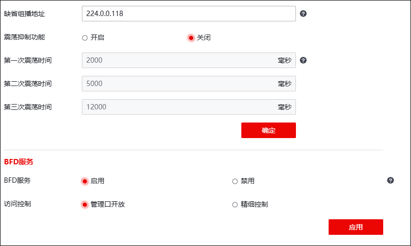
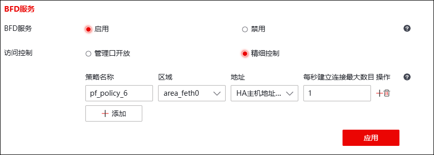

管理员可在全局配置页面设置缺省组播地址、震荡抑制、访问控制等全局配置，而BFD会话配置依赖于全局参数配置。
|
²全局配置信息修改后，仅对全局配置信息修改后添加的BFD会话生效，修改之前添加的BFD会话使用修改之前的全局配置信息。 |

| 步骤1 | 选择 ，如下图所示。 |

在全局配置时，各项参数的具体说明如下表所示。
参数 |
说明 |
|---|---|
缺省组播地址 |
设置缺省组播地址。在探测对端无IP地址的接口状态时，需要将探测地址指定为组播地址。组播地址默认为224.0.0.118。 说明： 默认组播地址修改后，仅之后添加的BFD会话配置使用修改后的组播地址。 |
震荡抑制功能 |
选择是否开启震荡抑制功能。默认关闭。 |
第一次震荡时间 |
设置BFD第一次震荡抑制时间。取值范围：1-3600000.单位：ms，默认：2000。 |
第二次震荡时间 |
设置BFD第二次震荡抑制时间。取值范围：1-3600000.单位：ms，默认：5000。 |
第三次震荡时间 |
设置BFD最大震荡抑制时间。取值范围：1-3600000.单位：ms，默认：12000。 注：建议最大震荡抑制时间>第二次震荡抑制时间>第一次震荡抑制时间。 |
点击【确定】，完成全局配置信息的修改。
| 步骤2 | BFD服务 |
1）点击【启用】可开启BFD服务功能。
2）开启BFD功能后，可制定BFD服务访问控制策略，如下图所示。

在设置BFD服务访问控制策略时，各项参数的具体说明如下表所示。
参数 |
说明 |
|---|---|
BFD服务 |
设置是否开启BFD服务。 |
访问控制 |
选择访问控制类型。可选择：管理口开放、精细控制。 管理口开放，配置管理口后，由任意地址发出从管理口进入，均可访问。管理口是指本地服务对管理区域MANAGE_AREA开放，请确保MANAGE_AREA接口配置无误。 精细控制，是指执行配置多条策略，并由策略决定BFD服务的权限，配置后限制从指定地址发出指定接口进入才可访问。 |
精细控制 |
对于访问NGFW的单向报文，仅有命中策略，才可访问NGFW本地，否则将被拦截。 输入策略名称（不可重复），区域对象（报文的入接口）、地址对象（报文的源IP地址），设置每秒建立连接最大数，取值范围：0-65535，0表示不作限制。 说明： 区域MANAGE_AREA表示管理域，地址IPv4_ANY表示所有IPv4地址，地址IPv6_ANY表示所有IPv6地址，地址GROUP_ADDRESS_ANY表示所有IP地址，每秒建立连接最大数目为0时表示不控制。 |
| 步骤2 | 配置完成后，点击【应用】按钮，完成本地服务设置。 |